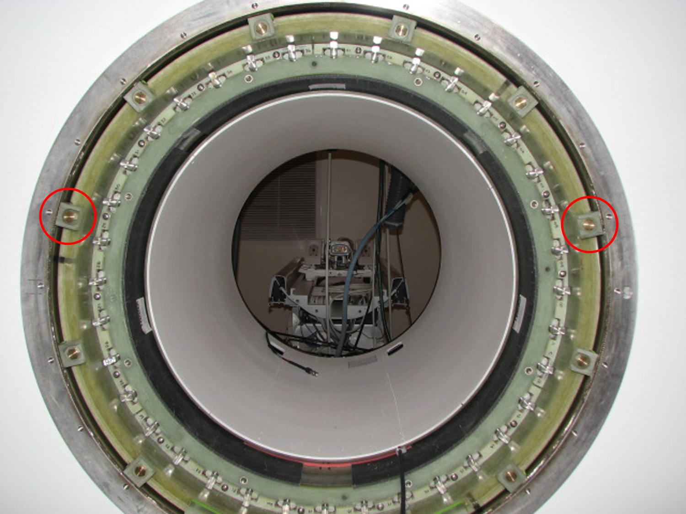

Operating Documentation
Direction 5670000, Rev# 1
Optima MR450w 1.5T Service Methods
Module Version 6.0, Version Date 1/26/10
Operating Documentation |
| Required Persons | Preliminary Reqs | Procedure | Finalization |
|---|---|---|---|
| 2 | Included in Procedure | 10 hours (excluding Field Stability Check) | Included in Procedure |
Shimming is the process of measuring the magnet's field over a fixed volume, then calculating and installing passive (steel) shims to improve field homogeneity. Perform on-site shimming to compensate for unequal distribution of room steel that is affecting field homogeneity. Additional shimming may be required following any significant environmental changes near the magnet. It is important to perform shimming after the magnet is sited and ramped with the magnetic field stabilized.
| NOTE: | Use the ShimTool software to calculate any additional
shimming required on site. Flowcharts of shimming prerequisites and
the shimming process are shown in Illustration 1 and Illustration 2, respectively. Allow the magnet to stabilize to <0.1 ppm/hr. main field drift before shimming (takes approximately 12 hours). Perform other commissioning functions during this time. Always use the most recent revision of GE Shimtool Software. |
Illustration 1: Pre-Shimming Flowchart
| Procedures Referenced | |
|---|---|
| Preparations for Field Measurement | Preparations for Shimming, Preparations for Shimming |
| Zeroing Currents in the B0 Coil, Zeroing Currents in the B0 Coil | Field Map Acquisition, Field Map Acquisition |
Illustration 2: Shimming Flowchart
| Procedures Referenced | |
|---|---|
| Running ShimTool, Running ShimTool | Field Adjustment after Shimming |
| Passive Shim Installation, Passive Shim Installation | Field Stability Check |
| Finalization, Step 1 | |
| Item | Qty | Effectivity | Part# | Manufacturer | |
|---|---|---|---|---|---|
| 1.5T Warning Sign & Label Kit | 1 | - | 46-258770G4 | - | |
| Nonferrous Safety Shoes | 2 (one pair per person) | - | - | - | |
| MetroLab Teslameter Kit | 1 | - | 46-251865G4 | - | |
| No. 5 MetroLab Probe (included in MetroLab Teslameter Kit 46-251865G4) | 1 | - | 46-255839P104 | - | |
| Shim Camera Kit | 1 | - | 2386028-2 | - | |
| GE ShimTool Software (included in Shim Camera Kit 2386028-2 | 1 | - | 5102783 | - | |
| Passive Shimming Kit (includes Universal Passive Shimming Kit 2380758-2, DVw Center Pole 5337880, and DVw Passive Shim Extraction Tool 5325761) | 1 | - | 5266042-2 | - | |
| 1.5T DVw Field Passive Shim Kit | 1 | - | 5342951 | - | |
| Titanium Tool Kit, Basic Set 5113258; Titanium Tool Kit, Installation Set 5112581; or other non-ferromagnetic tools (magnets with magnetic fields > 1.5T) | 1 | - | 5113258 or 5112581 | - | |
| Service Platform | 1 | - | 5372674 | - | |
| Service Methods documentation for the magnet /enclosures (available through the Common Documentation Library at gehealthcare.com or your local GE Healthcare Service Representative) | 1 | - | - | ||
| B0 Power Supply Kit | 1 | - | 2141701 | - | |
| ||||
| Potential Fatal Injury! | ||||
| before and while shimming the magnet: | ||||
|
| ||||
| Potential Fatal Injury! | ||||
| before shimming the magnet: | ||||
| Have all Work Assistants or Work Observers comply with the Buddy System Requirements & Certification subsection of 2301164PRE, MR Magnet - Safety Requirements. |
| ||||
Verify that Magnet Monitor is on and operational and comply
with the following:
| ||||
| Condition | Reference | Effectivity |
|---|---|---|
Make sure the area is secure and that all required Warning Signs are posted to meet the safety requirements stated in the following document before starting this procedure. | - | |
Removal of some magnet enclosure components may be required to complete this procedure. Refer to the following document and the appropriate Service Methods documentation (available through the Common Documentation Library at gehealthcare.com or your local GE Healthcare Service Representative) before continuing with this procedure if cover removal is required. | - | |
Verify that the magnet's magnetic field drift rate is <0.1 ppm/hr. in conformance with Field Stability Check before starting Running ShimTool, Running ShimTool. | - | - |
Verify that Magnet Monitor is on and operational. If using proprietary Magnet Monitor software, verify that Magnet Monitor Pressure Control is enabled and operational. | - | - |
Remove B0 currents in conformance with Zeroing Currents in the B0 Coil, Zeroing Currents in the B0 Coil, before starting Running ShimTool. | - | - |
Verify the dock is properly installed. | Magnet Delivery and Installation Manual, 5500108 | - |
Verify that the gradient coil is connected to the Heat Exchanger Cabinet (HEC) and that the HEC is turned on. | - | - |
The basic components of the Field Mapping Fixture are shown in Illustration 3.
| ||||
| POTENTIAL PROJECTILE HAZARD! | ||||
| FERROMAGNETIC OBJECTS IN A STRONG MAGNETIC FIELD CAN BECOME DANGEROUS PROJECTILES. | ||||
| ONLY USE NON-FERROMAGNETIC TOOLS AND EQUIPMENT WHEN WORKING IN THE MAGNETIC FIELD. |
Remove the first trim cover cap screw above magnet center on either side of the service end bell. (See Illustration 3 and Illustration 4).
Illustration 3: Field Mapping Fixture Basic Components
Illustration 4: Removing Trim Cover Cap Screw
Insert two standoffs (5338453) into hole locations shown in Illustration 4.
Attach the support end service bracket of the mapping fixture to the magnet interface ring using two screws that are provided in the mapping fixture kit.
Remove gradient support wedges at the 2 and 10 o'clock positions. See Illustration 5.
Illustration 5: Gradient Support Wedges

Attach the mapping fixture's patient end support bracket to the magnet interface ring — at the first bolt holes above magnet center on either side of the magnet — using two shorter thumb screws. (See Illustration 6.)
Illustration 6: Attaching the Patient End Support Frame
| ||||
| Make sure all fasteners along the mapping fixture shaft and
at the support frame are tight to prevent probe/array misalignment. Use the center pole for DVw (5337880) to prevent misalignment of the probe and array. There are two shafts included in the plotting fixture. Use the shorter shaft with DVw magnets. | ||||
| ||||
| The proper probe array (HM32-500) must be used for the DVw magnet. | ||||
Attach the probe array labled HM32-500 (GE part number 2276277-14). Make sure to use the center pole for DVw (5337880). For field mapping while running ShimTool, attach the probe array using the plastic screws of the array. (See Illustration 7.)
Illustration 7: Attaching Probe Array to Mapping Fixture Shaft
| NOTE: | Preparations for Shimming, Initial Preparations, must be completed before shimming the magnet. |
Prepare for field mapping in conformance with Preparations for Field Measurement before shimming if not already done.
Allow the magnet to stabilize to <0.1 ppm/hr. main field drift before shimming (takes 12 hours). Perform other commissioning functions during this time.
Check magnetic field stability in conformance with Field Stability Check.
Turn the Cryocooler off for 10 minutes. (This quenches the Superconducting Shield around the Coldhead.)
| NOTE: | Turn off the Cryocooler only before the initial shimming and not between each shimming iteration. |
| ||||
| Always use the most recent revision of GE Shimtool Software. | ||||
Connect the Shim Camera to the PC's COM port, and make sure all connections are secure.
Install the Mapping Fixture's Probe Array (if not done already) in conformance with Preparations for Field Measurement.
If the most recent version of GE Shimtool Software is not installed on the computer being used:
Insert the CD into the computer, automatically launching the installation program.
When asked, select the operating system (either Windows 2000 or Windows XP) for the computer in use. The CD should automatically install all ShimTool files at D:\MRshim (Windows XP) or C:\MRshim (Windows 2000).
Double-click the CoronaShim icon or the ShimTool*.exe listing in the ShimTool directory in Windows Explorer.
When the Register Magnet Type screen (see Illustration 8) displays:
Check that the entry next to Series: is HM for the DVw magnet to be shimmed.
Type W into the box next to Test Cell:. (Use W for all shimming done at a customer's site.)
Adjust the numerical value next to Number: to the serial number of the magnet to be shimmed.
Click [OK].
| NOTE: | ShimTool automatically creates a subdirectory for storing
all .map, .cur, and .shm files at D:\MRshim\HM####0 for
DVw series magnets. Windows XP installations use the D: drive; Windows 2000 uses the C: drive. |
Illustration 8: Register Magnet Type Screen
Load the passive shim (.psm) file that was created when the magnet was shimmed at the Florence facility onto the laptop. This file is stored on the ATR DVD. Load the .psm file into the proper directory for the magnet type. (For DVw magnets, the directory is D:\MRshim\HM####0, where #### is the serial number of the magnet.)
Select [Camera Controls] (fifth button from right) when the ShimTool main screen (see Illustration 9) displays.
Illustration 9: ShimTool Main Screen Button Definitions
Make sure the Magnetic Field Camera Controls window (see Illustration 10) displays a Center Freq: of 63.8 MHz (rounded).
| NOTE: | If the program did not find a camera attached to the PC's
COM port (Port - NONE displays in upper left of Illustration 10):
|
Illustration 10: Magnet Field Camera Controls: PC-Probe Communication
Choose an option on the Magnetic Field Camera Controls screen shown in Illustration 10:
Click the [Field Search] button to automatically find the center frequency of the magnet, and update the Center Freq: field shown in Illustration 11.
An initial listing from left to right in the scrolling text box:
Probe number: #,
Frequency in MHz: Freq (MHz),
Magnetic field strength in Gauss: Field (G),
Standard deviation in Gauss, and
Measurement count readings from each probe.
| NOTE: | The measurement counts should all read close to the number next to Measurements: at the top of the screen. |
Click the [Scan] button to verify the probe function by updating the scrolling text box.
Illustration 11: Magnet Field Camera Controls (After Choosing Field Search Button)
Click the [OK] button to finish the camera setup and close the Magnetic Field Camera Controls screen.
Proceed to Zeroing Currents in the B0 Coil, Zeroing Currents in the B0 Coil.
| ||||
| Potential Fatal Injury! | ||||
| before starting the Shimming procedure: | ||||
| Make sure to review and fully understand all superconducting magnet portions of 2301164PRE, MR Magnet - Safety Requirements. |
| NOTE: | Induced current must be removed from the B0 coil before
shimming the magnet. The B0 Coil Power Supply Kit (2141701) is used
to quench the induced currents in the B0 Coil Circuit. The B0 Coil
Power Supply is switchable from 115/230 VAC, 50/60 Hz. The B0 Coil current must be removed before each map/iteration or whenever a shim drawer has been moved during the shimming process. |
Connect the B0 Coil Power Supply output cable to P304-1 on the magnet connector box.
| ||||
| Make sure the red switch underneath the power supply matches the input source (115 or 230 VAC). | ||||
Connect the B0 Coil Power Supply input cable between the power supply and the voltage source.
Press the B0 Coil Power Supply switch (this switch is spring-loaded) and hold for one minute. The LED lights to indicate the power supply is supplying output current.
Wait for three minutes for the magnet to recover before taking a field map.
| ||||
| Do not move articles or equipment in the Magnet Room while shimming currents. | ||||
Proceed to Running ShimTool, Running ShimTool.
| ||||
| All shim drawers must be removed to center the probe. See Passive Shim Installation. | ||||
| ||||
| The magnet's center frequency must be stable in conformance with Field Stability Check before any alteration to the magnet's shims is made. | ||||
| ||||
| Moving articles or equipment in the Magnet Room may affect readings of magnetic field strength. | ||||
| NOTE: | Locate the Mapping Fixture and Shim Camera at the magnet's
approximate center in conformance with Preparations for Field Measurement before centering
the Probe Array using ShimTool. Make sure you are using the correct 50 cm probe array for the DVw magnet (2276277-14). |
Click [Acquire Field Map] (fourth button from right) on the ShimTool main screen shown in Illustration 12.
Illustration 12: Acquire Field Map Button on ShimTool Main Screen
Click the [Static] radio button on the Acquire Field Map screen (see Illustration 13), then select W_CoronaCamera50dsv from the Map/Camera Type: drop-down menu.
| NOTE: | Do not change the default number for Slices: and the filename for Map Name:. |
Illustration 13: Static Button on Acquire Field Map Screen
Make sure the curved part of the field camera's probe array faces directly up (0° position).
| ||||
| Moving any articles or equipment in or near the Magnet Room
may affect the field map. Do not allow nonessential conversation/distractions during the map acquisition. If an error occurs during field map acquisition:
| ||||
Click [OK] to begin mapping the magnet's magnetic field.
| NOTE: | The Field Map screen displays with the Acquire Progress window overlaid as shown in Illustration 14. The field camera's remote box switch should start to repeatedly flash. |
Illustration 14: Field Map Being Acquired
Press the field camera's remote box switch when it starts to flash repeatedly. (The light stops flashing and remains illuminated while the system acquires one slice of the field map. After the last slice, the light goes off).
When the camera's remote box switch starts to flash repeatedly again, slowly and smoothly rotate the camera one position (15°) clockwise.
Table 1: Field Camera Mapping Slices (Positions)
| Slice/Arca Position | Degrees | Slice/Arca Position | Degrees | Slice/Arca Position | Degrees | Slice/Arca Position | Degrees |
|---|---|---|---|---|---|---|---|
| 0 | 0/360b | 6 | 90b | 12 | 180b | 18 | 270b |
| 1 | 15 | 7 | 105 | 13 | 195 | 19 | 285 |
| 2 | 30 | 8 | 120 | 14 | 210 | 20 | 300 |
| 3 | 45 | 9 | 135 | 15 | 225 | 21 | 315 |
| 4 | 60 | 10 | 150 | 16 | 240 | 22 | 330 |
| 5 | 75 | 11 | 165 | 17 | 255 | 23 | 345 |
| a The Slice/Arc number shown here and in ShimTool corresponds with the number stamped on the mapping fixture's positioning wheel. | |||||||
| b The remote box flashes slower at these positions. | |||||||
Repeat Step 5 and Step 6 to take 24 map slices: Slice 0 at 0°/360° through Slice 23 at 345°. (See Table 1 for a summary of the slices.)
| NOTE: | The camera's remote box switch flashes slower at positions
0 (0°/360°), 6 (90°), 12 (180°) and 18 (270°). After taking all 24 slices, the finished map displays on the Field Map screen shown in Illustration 15. The ShimTool automatically assigns a sequential alphabetic filename to both the displayed map and the .map file it creates.
|
Record the mapped Peak-to-Peak (P-P) ppm value displayed on the Field Map screen (see Illustration 15) into the DVw Shimming Process Data on the same line as the map name.
Illustration 15: Sample First Field Map Screen for Axial Centering
If this is the first field map taken since the mapping fixture was installed or moved in any substantial way, use this map to axially center the probe array:
Select the Harmonics menu (fourth item from the left at the top of Illustration 15), and click Decompose (F6).
Click [OK] when the Select Harmonics screen (see Illustration 16) displays.
Illustration 16: Select Harmonics Screen
Look at the PPM value displayed on the right side of lines 9 and 11 when the screen shown in Illustration 17 displays.
Illustration 17: Field Map Harmonics
If the PPM value on lines 9 and 11 is > -0.8 ppm and < +0.8 ppm, the probe array is centered axially. Continue with Step 9.k.
Verify that the Positioning Wheel on the Mapping Fixture is in the groove labelled LCC. (See Illustration 18.)
Illustration 18: Mapping Fixture 5122854 (Side View)
Divide the PPM value obtained in Step 9.c for line 9 by 1.2 and the value for line 11 by 1.4. (See example below.) If the calculated values are significantly different, go back to verify mechanical centering (see Illustration 19) and check that you are using the correct 50 cm probe array for DVw (2276277-14). If both mechanical centering and the correct probe array are being used and both of the harmonics cannot be brought to within ± 0.8 ppm, then require both to be of opposite signs and within one turn of center, i.e., the (9,0) within ± 1.2 ppm and (11,0) within ± 1.4 ppm, and continue with Step 9.k.
Loosen the Axial Positioning Screw Locking Wheel, carefully turn the Axial Positioning Screw (see Illustration 18 and Illustration 19) the number of full turns calculated with the above formula.
For a positive (+) PPM value: Turn the Axial Positioning Screw clockwise.
For a negative (-) PPM value: Turn the Axial Positioning Screw counterclockwise.
Illustration 19: Mapping Fixture 5122854 (Front View)
Tighten the Locking Wheel.
Record the ShimTool generated .map filename into the DVw Shimming Process Data in the upper section, Maps for Probe Centering.
Repeat Step 1 through Step 7 and Step 9.a through Step 9.d to verify axial centering of the probe array.
Reinsert shim trays in conformance with Shim Tray Insertion section.
Quench B0. See Zeroing Currents in the B0 Coil.
Record the ShimTool generated .map filename (see Illustration 20) into DVw Shimming Process Data and DVw Passive Shimming Data.
Close the ShimTool Harmonics window(s).
Illustration 20: Sample Field Map Screen for Shimming
Click [GO] (button farthest left) on the ShimTool main screen shown in Illustration 21.
Illustration 21: GO Button on ShimTool Main Screen
Click the [Shim or Reshim a Magnet] radio button, and click [GO] when the What Would You Like To... screen (see Illustration 22) displays.
Illustration 22: What Would You Like To … Screen
When the Select the Type of Shim to Perform screen (see Illustration 23) displays:
Check that the Magnet Type: field reads Cylindrical.
Illustration 23: Select the Type of Shim to Perform Screen
Select the correct Subtype:DVw_SiFe.
Table 2: Magnet Subtype and Calibration File Choices
| Series | Positions | Correct Choices | ||
|---|---|---|---|---|
| Magnet Subtype | Passive Calibration File | Active Calibration File | ||
| HM | 45 | DVw_SiFe | DVw_PassiveSiFe.cal | Disabled |
Check the [Add and Subtract (ReShim)] radio button. (ShimTool can only run with the [New] radio button selected at the factory.)
| ||||
| Avoid using incorrect filenames. Keep track of filenames and iterations used (and what they were used for) by entering this information into the DVw Shimming Process Data (master log of the shimming process) and the Data Sheets affected by passive shimming (DVw Passive Shimming Data so accurate filenames can be used at any later time. | ||||
| NOTE: | If the output file is not located as stated in Table 3 and the full path to the correct shim file cannot be recalled,
click [Browse], locate the correct file, select
it, and open the file. Table 3: Directory Path, Filenames and File Format
| ||||||||||||||||||||
Accurately select the “Previous Shim File” name (the last file with a .PSM extension) from the list beside “Previous Shim File”.
Check that all information on the Select the Type of Shim to Perform screen (see Illustration 23) is accurate, then click [Next >].
When the Select the Input Field Map screen (see Illustration 24) displays, accurately enter the filename of the last field map with .map extension taken in Field Map Acquisition, Field Map Acquisition.
| NOTE: | If the output file is not located as stated in Table 3 and the full path to the correct map file cannot be recalled, click [Browse], locate the correct file , select it, and open the file. |
Illustration 24: Select the Input Field Map Screen
Click [Next >].
| NOTE: | The ShimTool looks at the data contained in the file specified
in
Step 6.
|
Illustration 25: Bad Data Point(s) Alert
Click the [Unified/Multi-Volume Shimming] radio button when the Shim Target and Tolerance Controls screen (see Illustration 26) displays.
Ensure the Map Type: field reads DVw-45fov-Unified.
Illustration 26: Shim Target and Tolerance Controls
Select the [Target (TOL) File] radio button.
Shimming is done with a tolerance file (DVw.tol), and it should display next to Target (TOL) File:.
| NOTE: | The Windows XP path to the tolerance file should be D:\MRshim\ShimTool\DVw.tol; Windows 2000 uses the C: drive. If the correct tolerance file is not located there and the full path to the correct location cannot be recalled, click [Browse], locate the correct file, select it, and open the file. |
Click [Next >] to proceed to the Select the Calibration File screen shown in Illustration 27.
Illustration 27: Select the Calibration File Screen
Select the .cal file from the Passive Calibration File scrolling list (see Illustration 27) to match the file stated in the ATR and the magnet subtype. (Table 2 shows the correct selection choices.)
| NOTE: | If the Passive Calibration file does not display in the scrolling list, click [Browse], locate the correct file, select it, and open it. The Windows XP path to the calibrations files should be D:\MRshim\Shimtool\*.cal (where the * represents the correct calibration file as stated in Table 2). Windows 2000 uses the C: drive. |
Click [Disable] next to Active Shim Calibration File.
Click [Next >].
Click [Next >] without making changes on the Disable Shims/Change Limits screen (see Illustration 28) when it displays.
Illustration 28: Disable Shims/Change Limits Screen
Click [Next >] without making changes on the Couple Passive Shim Positions (Optional) screen (see Illustration 29) when it displays.
Illustration 29: Couple Passive Shim Positions (Optional) Screen
Check that the Output File name on the Select Shim Target PPM screen (see Illustration 30) that displays next matches the .map filename, but with a .psm extension. Make no other changes on this screen.
| NOTE: | If the output file is not located as stated in Table 3 and the full path to the correct map file cannot be recalled, click [Browse], locate the correct .map file, select it, and open the file. Once opened, change the file extension to .psm. |
Illustration 30: Select Shim Target PPM Screen
Click [Finish] to begin processing the shimming information with ShimTool.
| NOTE: | A Shim Status window displays while the ShimTool is processing, and closes when processing is completed. |
Click [Dismiss] when the Shim Summary screen (similar to Illustration 31) displays.
Illustration 31: Shim Summary Screen
When the more complete display of the shim iteration results displays (similar to Illustration 32), print the ShimTool results.
| NOTE: | Illustrations show the D: drive (Windows XP) directory paths used by ShimTool installations; Windows 2000 uses the C: drive. |
Illustration 32: Shim Iteration Results Displays
The .PSM text file is automatically saved by the ShimTool. Print the file from NotePad, WordPad, or a word processor for pages similar to Illustration 33. (The ShimTool can also open previously saved files for on-screen viewing by selecting Show the output SHM file from the Shim menu.)
Illustration 33: Sample ShimTool Text File
To obtain a multi-page paper version of the ShimTool results that look similar to Illustration 34:
Select Print Lists... from the File menu, and
Click [OK].
Illustration 34: Sample ShimTool Printed Report - DVw Magnet Pages 1 and 2
| NOTE: | The multi-page paper version is easier to use while placing
shims in the shim trays. Passive Shims–Incremental Rounded Shim information on Page 3 and Passive Shims–Total Rounded Shim information on Page 4 of the ShimTool printout (see Illustration 34 and Illustration 35) is the same information contained under Incremental–Quantized (for Incremental Rounded Shim) and Total–Quantized (for Total Rounded Shim) in the .psm file (see Illustration 35, which now shows the amount of change and the resulting total at each shim position to be changed). |
Illustration 35: Sample ShimTool Printed Report - Passive Shimming, Pages 3 and 4
| NOTE: | Use these ShimTool results for Passive Shim Installation, Passive Shim Installation. |
Record the Anticipated Field Tolerance (PPM) value found in the .psm file in the DVw Shimming Process Data under Predicted PPM for the current iteration.
Record the Total Passive Shim Mass (shims) value found in the.psm file in the DVw Shimming Process Data under Passive Shim Mass (mm) for the current iteration.
| NOTE: | Shim mass (shims) refers to the total number of shims in all shim tray positions. |
Compare the five volumes listed under The recomp field inhomogeneity is ... (see Illustration 33) to the specifications shown in Table 4.
Table 4: Volumetric Specifications
| Elliptical Volume | Peak-to-Peak ppm Specification |
|---|---|
| 50 x 45 cm | < 25 ppm (peak to peak) |
| 45 x 40 cm | < 10 ppm (peak to peak) |
| 42 x 36 cm | < 4 ppm (peak to peak) |
| 30 x 27 cm | < 1 ppm (peak to peak) |
| 20 x 18 cm | < 0.5 ppm (peak to peak) |
If all five volumes listed under The recomp field inhomogeneity is ...are within specification, the magnet is shimmed and the screen shown in Illustration 36 displays.
Click [No].
Exit the ShimTool and continue with Finalization, Step 1.
Illustration 36: Congratulations Screen
| NOTE: | The Congratulations! screen indicates the magnet is shimmed to within specification. Writing an ATR file is not needed after the magnet has left the factory. |
If any volume listed under The recomp field inhomogeneity is ... is not within specification:
Install the passive shims called for by the ShimTool in conformance with Passive Shim Installation, Passive Shim Installation.
Once the passive shims are installed, remove the currents from the B0 coil in conformance with Zeroing Currents in the B0 Coil, Zeroing Currents in the B0 Coil.
Return to Field Map Acquisition, Field Map Acquisition to take a new map and run the ShimTool for passive shimming.
Do not attempt to passive shim a 1.5T magnet without reading, understanding, and following the safety alerts.
| ||||
| Potential Fatal Injury! | ||||
| before and while performing magnet passive shimming: | ||||
|
| ||||
| Potential Fatal Injury! | ||||
| before starting to passive shim the magnet: | ||||
| Have all Work Assistants or Work Observers comply with the Buddy System Requirements & Certification subsection of 2301164PRE, MR Magnet - Safety Requirements. |
| ||||
| Potential Projectile Hazard! | ||||
| Ferromagnetic objects in a strong magnetic field can become dangerous projectiles. Steel shims in a magnetic field are subject to a force proportional to the steel's mass and strength. in a 1.5 tesla field forces >50 pounds (22.6 kg) may be encountered. An attracting force pulling a shim tray into the magnet will be encountered when a loaded tray is brought within 3 ft. (1 m) of the magnet bore. an attracting and/or repelling force will be encountered when inserting/removing a loaded shim tray into/from a track inside the magnet bore. a repelling force on a shim tray inside the magnet's bore may propel the tray out from the magnet when the tray is released from its fixed position. | ||||
Make sure to follow these safety requirements during passive
shim installation/removal:
|
| ||||
| Potential Skin Injury! | ||||
| Fiberglass from the shim trays can splinter while inserting/removing trays. | ||||
| Wear no-slip gloves during shim tray insertion/removal to protect against fiberglass splinters from the trays. |
Slide the DVw shim tray puller (5325761) over the shim tray to be removed and align the center post with the hole on the shim tray handle. Rotate the puller 90 degrees counterclockwise to secure the connection. (See Illustration 37.)
Illustration 37: DVw Shim Tray Puller
| ||||
| Potential Projectile Hazard! | ||||
| Ferromagnetic objects in a strong magnetic field can become dangerous projectiles. | ||||
| Be prepared to manage the effects of a 1.5T field on the shim tray during tray insertion/removal. Adhere to all safety material listed above. |
| ||||
| Potential Skin Injury! | ||||
| Fiberglass from the shim trays can splinter while inserting/removing trays. | ||||
| Wear no-slip gloves during shim tray insertion/removal to protect against fiberglass splinters from the trays. |
Carefully pull the shim tray straight out from its track, and have the work assistant hold onto the tray as soon as possible. (See Illustration 38.)
Illustration 38: Shim Tray Removal
Work Assistant: Securely hold the shim tray, and carry the tray and the puller away from the magnet's field to a shim tray loading area in another room.
| ||||
| Load shims into the shim tray in a room away from the magnet's field. | ||||
First person: Identify which component shims are required to meet the total shim mass specified by the ShimTool for each position in each tray.
| NOTE: | See Illustration 39 for a sample ShimTool shimming report, Illustration 40 for the DVw
shim tray layout, and Illustration 41 for assembly of component shim per shim position. Illustration 39 shows the D: drive (Windows XP) directory paths used by ShimTool installations; Windows 2000 uses the C: drive. |
Illustration 39: Sample ShimTool Printed Report, Pages 3 and 4
Illustration 40: Shim Tray Layout
Illustration 41: Assembly of Component Shims Per Shim Position
| NOTE: | If there is a 5342857-2 or 5342857-7 shim at a position on one side of the shim tray, do not stack other shims on that side at the same position. |
Table 5: Shim Combinations for DVw Positions (Number of Shims 1 through 14)
| Shims Requested: | ||||||||||||||
|---|---|---|---|---|---|---|---|---|---|---|---|---|---|---|
| Parts Used: | 1 | 2 | 3 | 4 | 5 | 6 | 7 | 8 | 9 | 10 | 11 | 12 | 13 | 14 |
| 5342857-4 | 1 | 1 | 1 | 1 | 1 | 1 | 1 | |||||||
| 5342857-3 | 1 | 1 | 2 | 2 | 3 | 3 | 4 | 4 | 5 | 5 | 1 | |||
| 5342857 | 1 | 1 | 1 | |||||||||||
| 5342857-8 | ||||||||||||||
| 5342857-5 | ||||||||||||||
| 5342857-6 | ||||||||||||||
| 5342857-7 | ||||||||||||||
| 5342857-2 | ||||||||||||||
| Cap screw (1) or Countersunk screw (2) | 1 | 1 | 1 | 1 | 1 | 1 | 1 | 1 | 1 | 1 | 1 | 1 | 1 | 1 |
| 5212343 | 1 | 1 | 1 | 1 | 1 | 1 | 1 | 1 | 1 | 1 | 1 | |||
Table 6: Shim Combinations for DVw Positions (Number of Shims 15 through 28)
| Shims Requested: | ||||||||||||||
|---|---|---|---|---|---|---|---|---|---|---|---|---|---|---|
| Parts Used: | 15 | 16 | 17 | 18 | 19 | 20 | 21 | 22 | 23 | 24 | 25 | 26 | 27 | 28 |
| 5342857-4 | 1 | 1 | 1 | 1 | 1 | 1 | 1 | |||||||
| 5342857-3 | 1 | 2 | 2 | 3 | 3 | 1 | 1 | 2 | 2 | 3 | 3 | |||
| 5342857 | 1 | 1 | 1 | 1 | 1 | |||||||||
| 5342857-8 | ||||||||||||||
| 5342857-5 | 1 | 1 | 1 | 1 | 1 | 1 | 1 | 1 | ||||||
| 5342857-6 | ||||||||||||||
| 5342857-7 | ||||||||||||||
| 5342857-2 | 1 | |||||||||||||
| Cap screw (1) or Countersunk screw (2) | 1 | 1 | 1 | 1 | 1 | 1 | 1 | 1 | 1 | 1 | 1 | 1 | 1 | 2 |
| 5212343 | 1 | |||||||||||||
Table 7: Shim Combinations for DVw Positions (Number of Shims 29 through 42)
| Shims Requested: | ||||||||||||||
|---|---|---|---|---|---|---|---|---|---|---|---|---|---|---|
| Parts Used: | 29 | 30 | 31 | 32 | 33 | 34 | 35 | 36 | 37 | 38 | 39 | 40 | 41 | 42 |
| 5342857-4 | 1 | 1 | 1 | 1 | 1 | 1 | 1 | |||||||
| 5342857-3 | 1 | 1 | 1 | 1 | 2 | 2 | 3 | 3 | 1 | |||||
| 5342857 | 1 | 1 | 1 | 1 | 1 | 1 | 1 | 1 | ||||||
| 5342857-8 | ||||||||||||||
| 5342857-5 | 1 | 1 | 1 | |||||||||||
| 5342857-6 | 1 | 1 | 1 | 1 | 1 | 1 | 1 | 1 | 1 | 1 | 1 | |||
| 5342857-7 | ||||||||||||||
| 5342857-2 | 1 | 1 | 1 | |||||||||||
| Cap screw (1) or Countersunk screw (2) | 2 | 2 | 2 | 2 | 2 | 2 | 2 | 2 | 2 | 2 | 2 | 2 | 2 | 2 |
| 5212343 | 1 | 1 | 1 | |||||||||||
Table 8: Shim Combinations for DVw Positions (Number of Shims 43 through 56)
| Shims Requested: | ||||||||||||||
|---|---|---|---|---|---|---|---|---|---|---|---|---|---|---|
| Parts Used: | 43 | 44 | 45 | 46 | 47 | 48 | 49 | 50 | 51 | 52 | 53 | 54 | 55 | 56 |
| 5342857-4 | 1 | 1 | 1 | 1 | 1 | 1 | 1 | |||||||
| 5342857-3 | 1 | 2 | 2 | 3 | 3 | 1 | 1 | 2 | 2 | 3 | 3 | |||
| 5342857 | ||||||||||||||
| 5342857-8 | ||||||||||||||
| 5342857-5 | 1 | 1 | 1 | 1 | 1 | |||||||||
| 5342857-6 | 1 | 1 | 1 | 1 | 1 | 1 | 1 | 1 | 1 | 1 | 1 | 1 | 1 | |
| 5342857-7 | 1 | 1 | 1 | 1 | 1 | 1 | 1 | 1 | 1 | |||||
| 5342857-2 | 1 | |||||||||||||
| Cap screw (1) or Countersunk screw (2) | 2 | 2 | 2 | 2 | 2 | 2 | 2 | 2 | 2 | 2 | 2 | 2 | 2 | 2 |
| 5212343 | ||||||||||||||
| ||||
| Make sure screws holding shims to shim tray are fully tightened. Use Torque Screwdriver 46-294167P81. Loose screws/shims can cause white pixels. | ||||
Securely screw the component shim arrangement to the shim tray position as shown in Illustration 41). Torque each screw to 10 lb-in using Torque Screwdriver (46-294167P81, included in Passive Shimming Kit 5266042). Orient every position in each tray identically (screw heads facing the same way, etc.)
Second person (NOT first): Check that the incremental shims were added/subtracted in conformance with the Passive Shims–Incremental Rounded Shim information on Page 3 of the ShimTool printout (see Illustration 39).
| ||||
| Do NOT change the name of the .psm file. During the next shimming iteration, the ShimTool uses the steel quantity/location information from this iteration's .psm file and a new map of the field with that steel quantity installed to calculate its new report. | ||||
Both people separately: Check that the total shims at each tray position equal the total shims for that tray position specified in the Passive Shims–Total Rounded Shim information on Page 4 of the ShimTool printout (see Illustration 39).
If the actual shim totals in each position match the .psm file in the ShimTool printout, continue with Shim Tray Insertion, Shim Tray Insertion.
If the actual shim totals in any position do not match the .psm file in the ShimTool printout:
Edit the .psm file in this iteration of Total–Quantized pages to reflect the actual steel on the trays.
Save the edited .psm file using its existing name.
Continue with Shim Tray Insertion, Shim Tray Insertion.
| ||||
| Potential Skin Injury! | ||||
| Fiberglass from the shim trays can splinter while inserting/removing trays. | ||||
| Wear no-slip gloves during shim tray insertion/removal to protect against fiberglass splinters from the trays. |
| ||||
| Potential Projectile Hazard! | ||||
| Ferromagnetic objects in a strong magnetic field can become dangerous projectiles. | ||||
| Be prepared to manage the effects of a 1.5T field on the shim tray during tray insertion/removal. Adhere to all safety material listed above. |
| ||||
| Reconnect the shim tray puller to the shim tray in a room away from the magnet's field. | ||||
Securely carry the puller and tray to the magnet.
| ||||
| Potential Pinch Hazard! | ||||
| Fingers can get pinched during tray insertion when the magnetic field pulls the tray into the magnet. | ||||
| Guide trays into the tracks using a flat hand or fist, not fingers. |
Begin to carefully slide the shim tray straight into its track using both hands as shown in Illustration 42. Have the work assistant help guide the tray into the track.
Illustration 42: Hand Guidance of Shim Tray Insertion
Slide the DVw shim tray puller over the shim tray to be inserted.
Fully insert the shim tray into the magnet. (Illustration 43 shows Shim Tray 6 not fully inserted.)
Illustration 43: Shim Tray Not Fully Inserted
Rotate the shim tray knob 90 degrees clockwise to secure the connection. (See Illustration 37.)
Disengage the puller from the shim tray.
Make sure the shimming results are available to other personnel for future shimming:
Copy all .map and .psm files generated during shimming to a CD,
Copy the.map, and .psm files to the console,
Record the directory path of the files copied to the console in the Shim Process Log of the DVw Shimming Process Data, and
Leave the CD on site with this Magnet and Cryogens Subsystem manual.
Return the magnet to its normal operating condition in conformance with Preparations for Field Measurement and the appropriate Service Methods documentation.
| NOTE: | See Field Adjustment after Shimming for field adjustments after shimming. See Field Stability Check for magnetic field stability checks. |